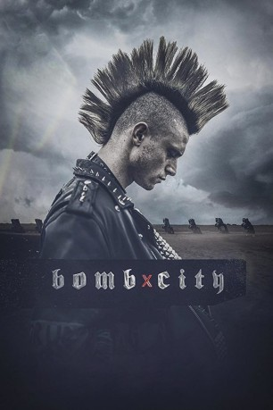
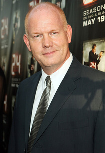
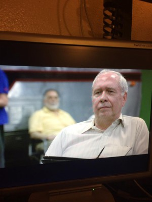

#11150 Bomb City
 
 IMDB-Wertung: 6.9 / 10
IMDB-Wertung: 6.9 / 10  Metascore: 65
Metascore: 65 
Winter 1997. Amarillo, Texas. Brian Deneke ist wegen seines grünen Iros und seiner großen Leidenschaft für Punkmusik bekannt. Er veranstaltet Punk-Konzerte mt seinen Freunden im maroden Club "Bomb City". Brian und seine befreundeten "Punks" weigern sich, konform mit der konservativen Kultur um sie herum einherzugehen. Ihr radikales Äußeres provoziert soziale Intoleranz in der Gemeinde, vor allem bei Cody Cates, einem Highschool-Sportler der sich in einer Gruppe namens "White Hatters" assimiliert hat. Nach einem verlorenen Footballspiel haben Cody und ein paar andere White Hatter eine Schlägerei mit einigen Punks. Dieser Konflikt gibt den Startschuss für eine Reihe von feindseligen Begegnungen zwischen den beiden Gruppen, die eines Abends in einen furchtbar gewaltsamen Straßenkampf münden. Dieser Abend erlangte traurige Berühmtheit wegen eines der kontroversesten Hassverbrechen des modernen Amerikas. Basierend auf einer wahren Geschichte.
Jahr: 2017
Dauer: 98 Minuten
FSK: 16
Land: USA Studio: Gravitas VenturesTonspuren: DTS - ,
Untertitel: Deutsch,
Auflösung: 1080p (1920x808) Größe: 5038 MB
Genre: Drama, Krimi
Regisseur: Jameson Brooks
Drehbuch: Jameson Brooks, Sheldon Chick
Soundtrack: Cody Chick, Sheldon Chick
Darsteller:
- Dave Davis als Brian
-  Glenn Morshower als Cameron Wilson
- Luke Shelton als Cody Cates
- Henry Knotts als King
- Logan Huffman als Ricky
- Maemae Renfrow als Jade
- Eddie Hassell als Oles
- Audrey Gerthoffer als Michelle
- Lorelei Linklater als Rome
- Michael Seitz als Davis
- Major Dodge als Officer Denny
- Holt Boggs als Officer Chuck
- Isaiah LaBorde als Jack Hamilton
-  Darryl Cox als Mike
- Rachele Brooke Smith als Lindsey
- Sharon Garrison als Betty
- Todd Terry als Mr. Cates
- Libby Hunt als Mrs. Cates
- Tommy Walker als Miko The Psycho
- Sean Lowe als Coach Fields
- Luis Albert Acevedo Jr. als Herschel
- Marilyn Manson als Himself
- Jax Pyle als Brady
- Jake Chiasson als Jake
- Marcelle Purdy als News Reporter 2
- Ryan Adriel als White Hatter (uncredited)
- Tristan Alijah Garcia als Parade Kid (uncredited)
- Robert Johnson als Onlooker (uncredited)
- Dominic Ryan Gabriel als Jason
- Lukas Termin als McCormick
- Robbie Lawler als Officer Vincent
- Willie Pile als Mr. Frosty
- Brandon Neighbors als Coach Page
- Brad Sham als Radio Football Host
- Brendan Higgins als News Reporter 1
- Vanessa Abuchaibe als News Reporter 3
- Dennis Bailey als Judge Abe
- Matt Chiasson als Coach Kaz (uncredited)
- Major Dodge Jr. als Parade Kid (uncredited)
- Lee Durham als Bailiff (uncredited)
- Callisto Griffith als Brady's Girl (uncredited)
- Cäsar Jacobson als Officer Denny's Wife (uncredited)
- Chaz Smith als EMT (uncredited)
Datei: X:\2017(A-F)\Bomb City (2017, FSK16, 1920x808).mkv seit 29.04.2019
Festplatte: HD 2017(A-Z)-2018(A-F)
 Es gibt insgesamt 152 Filme in der Gruppe '2017(A-F)'
Es gibt insgesamt 152 Filme in der Gruppe '2017(A-F)'